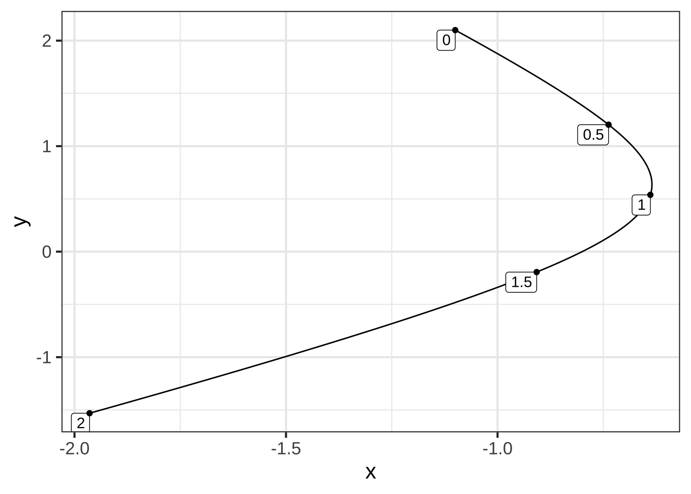
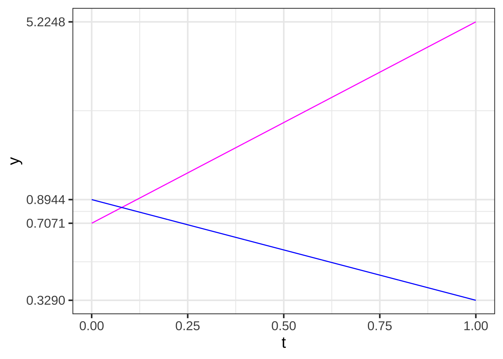

Chapter 53 Eigenvalues, eigenvectors
In the previous chapters, you’ve seen how linear dynamics, when unstable, lead trajectories off to infinity. Chapter 51 looked at some ways that nonlinearity can tame instability, as in the simple models of linear growth.
In this chapter, we return to linear dynamics to develop a quantitative theory of stability. Such theory is important in many engineering and design applications. For instance, a building exposed to earthquake risk can be economically designed to be strong specifically against the type of shaking produced by earthquakes. An electronic circuit can be designed to be sensitive to certain kinds of communication signals while still resisting noise or jamming.
Example 53.1 Cruise control is a feature of many modern automobiles. It enables a driver to set a desired speed for the car to follow automatically, thus reducing cognitive load on the driver. Early models of cruise control introduced in the 1970s (and still common in 2020) had an extremely simple logic. The speedometer constantly monitors the car’s speed \(v\). The driver sets a desired speed, which we’ll call \(v_0\). The cruise control actuator—the mechanism that works to maintain the speed at \(v_0\) by, let’s say, adjusting the throttle to increase or reduce speed as appropriate—is designed to produce a throttle input proportional to the deviation in actual speed \(v\) from the set speed \(v_0\). \[\text{throttle_input} = -a (v - v_0)\ .\] You can see that when \(v = v_0\), the throttle input from the system is zero. When \(v_0 < v\), as when starting to go downhill, the throttle input will be negative, reducing the speed.
A simple model is that the throttle input is proportional to \(\partial_t\, v\): positive input increases speed, negative input decreases speed. The overall system is then described by a linear, first-order differential equation \[\partial_t\,v = -a(v-v_0)\ .\] This equation has a fixed point at \(v = v_0\) (as desired). To describe more simply the dynamics around the fixed point, we can define a new dynamical state \(y=v - v_0\). Differentiating both sides with respect to time gives \(\partial_t y = \partial_t v\), so we can re-write the original differential equation as \[\partial_t y = -a y\] which has a solution \(y(t) = A e^{-at}\) as we’ve seen before. For any positive coefficient \(a\), the control system is stable: a deviation from \(v_0\) will be followed by exponential decay back to \(v_0\).
A modern cruise control system adds an important feature: the car slows down automatically if it gets too close to the car in front. Let’s call the distance to the leading car \(x\) and define “too close” to mean closer than distance \(x_0\). The car is travelling at velocity \(v\) and the car in front at \(v_f\). If \(v_f < v\), the distance between the cars gets smaller: \(\partial_t x = -(v - v_f)\). On the other hand, if \(x_0 < x\), the car is far enough away that the velocity can be increased: \(\partial_t v = b(x - x_0)\). We can unite these two first-order differential equations into a single, second-order equation: \[\partial_t x = -(v - v_f) \ \ \implies\ \ \partial_{tt} x = - \partial_t v = - b(x-x_0)\] To solve this system, define \(y \equiv x - x_0\). This implies \(\partial_{tt} y = \partial_{tt} x\), so the equation describing the control system becomes \[\partial_{tt} y = - b y\ .\] The solution to this is \(y(t) = A \sin\left(\sqrt{b} \ t\right)\) as you can confirm by substitution.
Result: The simple car-following control system oscillates. That’s not a very good experience for the driver! By constructing a theory of stability, we may be able to figure out a re-design that will cause the oscillations to go away.
53.1 Vector solutions to linear differential equations
The form in which we have been writing linear differential equations in two state variables is \[\partial_t x = a x + b y\\ \partial_t y = c x + d y\]
A key part of constructing a theory of stability is finding a set of mathematical ideas that enable us to view dynamics in a simpler way. The idea we will introduce here is thinking about the state and trajectory of a differential equation in terms of vectors. We’ll work here with systems with a two-variable dynamical state, but the results apply just as well to higher dimensional states. That’s important in applied work, where the systems being modeled are complicated with many state components.
We can re-write the linear differential equation using vector and matrix notation. Suppose that we collect the \(x\) and \(y\) components of the state into a vector, \[\vec{w(t)} =\left[\begin{array}{c}x(t)\\y(t)\end{array}\right]\ .\] The differential equation, in terms of \(\vec{w(t)}\) is \[\partial_t \vec{w(t)} = \left[\begin{array}{cc}a&b\\c&d\end{array}\right] \vec{w(t)}\ .\] Now imagine that we pick two non-colinear vectors, \(\vec{u_1}\) and \(\vec{u_2}\) that span the state space. Since the vectors are assumed to span the state, any initial condition can be written as a linear combination of those two vectors: \[\vec{w(0)} =\left[\begin{array}{c}x(0)\\y(0)\end{array}\right] = m_1 \vec{u_1} + m_2 \vec{u_2}\ .\]
For the moment, we won’t worry about how best to choose \(\vec{u_1}\) and \(\vec{u_2}\); any two vectors that are not colinear will do.
Example 53.2 \(\ \)
As a running example, we’ll work with the pair of first-order differential equations \[\partial_t x = x + y\\ \partial_t y = 2 x \ \ \ \ \] which, in vector/matrix form are \[\partial_t \vec{w(t)} = \left[\begin{array}{cc}1&1\\2&0\end{array}\right] \vec{w(t)}\ .\] Imagine that we choose, arbitrarily, \[\vec{u_1} = \color{magenta}{\left[\begin{array}{r}1\\-3\end{array}\right]}\ \ \ \text{and}\ \ \ \vec{u_2} = \color{blue}{\left[\begin{array}{r}1.0\\0\end{array}\right]}\ .\]
For the example, we’ll calculate a trajectory starting at the initial condition \(\vec{w(0)} = \left[\begin{array}{r}-1.1\\ 2.1\end{array}\right]\):
traj <- integrateODE(dx ~ x + y, dy ~ 2*x, x=-1.1, y=2.1, tdur=2)
traj_plot(y(t) ~ x(t), traj)

Figure 53.1: The trajectory calculated starting at (-1.1, 2.1). The graph is annotated with the vectors \(\vec{u_1}\) and \(\vec{u_2}\) and the flow field.
The initial condition (marked “0” in Figure 53.1) is, like any other point in the state space, a linear combination of \(\vec{u_1}\) and \(\vec{u_2}\). We can find the scalar coefficients of the linear combination using any of the methods presented in Block 5, for instance the telescope method.
We’ll illustrate with qr.solve():
M <- cbind(rbind(1,-3), rbind(1,0))
w0 <- rbind(-1.1, 2.1)
qr.solve(M, w0)## [,1]
## [1,] -0.7
## [2,] -0.4So, \(\vec{w(0)} = -0.7 \vec{u_1} - 0.4 \vec{u_2}\). Keep these scalar coefficients, \(-0.7\) and \(-0.4\) in mind for the next example.
We can use integrateODE() to find the solution starting at any initial condition. In particular, we can find the solution \(\vec{u_1}\) as the initial condition and, similarly, using \(\vec{u_2}\) as the initial condition.
traj_u1 <- integrateODE(dx ~ x + y, dy ~ 2*x, x=1, y=-3, tdur=2)
traj_u2 <- integrateODE(dx ~ x + y, dy ~ 2*x, x=1, y= 0, tdur=2)Figure 53.2 shows these trajectories.
Figure 53.2: Trajectories from the initial conditions \(\color{magenta}{\vec{u_1}}\) and \(\color{blue}{\vec{u_2}}\).
At first glance, the two trajectories \(\vec{u_1(t)}\) and \(\vec{u_2(t)}\) in Figure ?? that start from \(\vec{u_1}\) and \(\vec{u_2}\) might not look much like the trajectory in Figure 53.1 that starts from \(\vec{w(0)} = -0.7 \vec{u_1} - 0.4 \vec{u_2}\). But in fact there is a very simple relationship between the trajectories: \[\vec{w(t)} = -0.7 \vec{u_1(t)} - 0.4 \vec{u_2(t)}\ .\] To state the situation more generally, any solution to the differential equations can be written as a linear combination of the solutions starting at \(\vec{u_1}\) and \(\vec{u_2}\), regardless of how \(\vec{u_1}\) and \(\vec{u_2}\) were chosen.
We can see this algebraically. Since \(\vec{u_1(t)}\) and \(\vec{u_2(t)}\) are solutions to the linear differential equation, it must be that
\[\partial_t \vec{u_1(t)} = \left[\begin{array}{cc}1&1\\2&0\end{array}\right] \vec{u_1(t)}\ \ \text{and}\ \ \partial_t \vec{u_2(t)} = \left[\begin{array}{cc}1&1\\2&0\end{array}\right] \vec{u_2(t)}\ .\]
Taking a linear combination of these equations gives
\[\partial_t \left[m_1\, \vec{u_1(t)} + m_2 \vec{u_2(t)}\right] = \left[\begin{array}{cc}1&1\\2&0\end{array}\right] \left[m_1\, \vec{u_1(t)} + m_2 \vec{u_2(t)}\right]\]
The same will be true in general, that is, for the matrix \(\left[\begin{array}{cc}a&b\\c&d\end{array}\right]\).
53.2 Eigenvectors and eigenvalues
In the previous section, we saw that the solution to any linear differential equation starting at any initial condition can be written as a linear combination \(m_1 \vec{u_1(t)} + m_2 \vec{u_2(t)}\), where \(\vec{u_1(t)}\) is the solution starting at an initial condition \(\vec{u_1}\) and \(\vec{u_2(t)}\) is the solution starting at \(\vec{u_2}\). It does not matter how \(\vec{u_1}\) and \(\vec{u_2}\) are chosen, so long as they are not colinear, that is, so long as they span the state space.
In this section, we’ll demonstrate that there is a particular way of selecting \(\vec{u_1}\) and \(\vec{u_2}\) that makes the solutions \(\vec{u_1(t)}\) and \(\vec{u_2(t)}\) have a very simple, purely exponential format. The vectors to be chosen are the eigenvectors of the matrix \(\left[\begin{array}{cc}a&b\\c&d\end{array}\right]\). We’ll call these eigenvectors \(\vec{\Lambda_1}\) and \(\vec{\Lambda_2}\). (This use of the Greek letter \(\Lambda\) (capital “lambda”) and it’s lower-case version \(\lambda\), is conventional in mathematics, physics, and engineering. So it’s worth learning to identify the letters.)
Our task in this section is to show how to compute the eigenvectors \(\vec{\Lambda_1}\) and \(\vec{\Lambda_2}\) and that the solutions \(\vec{\Lambda_1(t)}\) and \(\vec{\Lambda_2(t)}\) are in fact simple exponentials. In Chapter 54 we’ll derive the formula for the eigenvectors. Here, we’ll use the R function eigen() to do the calculations for us.
Example 53.3 \(\ \)
Eigenvectors can be calculated using the R function eigen() applied to the abcd matrix that defines the linear differential equation.
For the system of first-order differential equations \[\partial_t x = x + y\\\partial_t y = 2x\ \ \ \ \ \] the matrix is, as we’ve seen, \[\left[\begin{array}{cc}1&1\\2&0\end{array}\right]\ .\]
Carrying out the eigenvector calculation is straightforward:
M <- cbind(rbind(1,2), rbind(1,0))
eigen(M)## eigen() decomposition
## $values
## [1] 2 -1
##
## $vectors
## [,1] [,2]
## [1,] 0.7071068 -0.4472136
## [2,] 0.7071068 0.8944272The eigenvectors are the two columns of the matrix labeled vectors returned by the calculation. Here, that’s
\[\vec{\Lambda_1} = \left[\begin{array}{r}0.7071\\0.7071\end{array}\right]
\ \ \ \text{and}\ \ \ \
\vec{\Lambda_2} = \left[\begin{array}{r}-0.4472\\0.8944\end{array}\right]\ .\]
The calculation also produces eigenvalues. Here that’s \(\lambda_1 = 2\) and \(\lambda_2 = -1\).
We can see what’s special about \(\vec{\Lambda_1}\) and \(\vec{\Lambda_2}\) by plotting them along with the flow field, as in Figure 53.3.
Figure 53.3: The eigenvectors for the \(\left[\begin{array}{cc}1&1\\2&0\end{array}\right]\) plotted along with the flow.
The eigenvectors mark the directions where the flow is either directly toward the fixed point or directly away from it. Here, the flow on the subspace of \(\color{magenta}{\vec{\Lambda_1}}\) is away from the fixed point, while the flow along the subspace of \(\color{blue}{\vec{\Lambda_2}}\) is inward to the fixed point.
The consequence of this alignment of the flow with the eigenvectors is that the trajectory from any initial condition \(m_1 \vec{\Lambda_1}\) will have the form \(m_1(t) \vec{\Lambda_1}\) and similarly for an initial condition \(m_2(t) \vec{\Lambda_2}\).
As we did in the previous section, let’s calculate the trajectories \(\color{magenta}{\vec{\Lambda_1(t)}}\) and \(\color{blue}{\vec{\Lambda_2(t)}}\) starting at the two eigenvectors and plot out the \(y(t)\) component of the solution. Since we’re anticipating an exponential form for the function, we’ll use semi-log axes, where an exponential will look like a straight line.
traj_eigen1 <- integrateODE(dx ~ x + y, dy ~ 2*x, x=0.7071, y=0.7071)
traj_eigen2 <- integrateODE(dx ~ x + y, dy ~ 2*x, x=-0.4472, y=0.8944)
traj_plot(y(t) ~ t, traj_eigen1, color="magenta") %>%
traj_plot(y(t) ~ t, traj_eigen2, color="blue") %>%
gf_refine(scale_y_log10(breaks=c(0.3290, 0.7071, 0.8944, 5.2248))) We’ve marked the \(y\) axis with the starting and ending values of each function, so that you can find the exponential parameter \(k\) for each function.
\[\color{magenta}{y_1(t) = 0.7071 e^{k_1 t}}\\ \color{blue}{y_2(t)} = 0.8944 e^{k_2 t}\] To find \(k_1\) and \(k_2\), plug in \(t=1\) to the solution:
\[\color{magenta}{y_1(1) = 5.2248 = 0.7071 e^{k_1}} \implies k_1=2\\ \color{blue}{y_2(1) = 0.3290 = 0.8944 e^{k_2}} \implies k_2 = -1\]
Look back at the results from the eigen(M) calculation. These values for \(k_1\) and \(k_2\) are exactly the eigenvalues that were computed from the matrix M. In standard notation, rather than \(k_1\) and \(k_2\), the notation \(\lambda_1 = k_1\) and \(\lambda_2 = k_2\) is preferred. (Remember, \(\lambda\) is the Greek letter “lambda” in it’s lower-case form.)
Every solution to the differential equation has the form
\[m_1\, e^{\lambda_1 t} \vec{\Lambda_1} + m_2\, e^{\lambda_2 t} \vec{\Lambda_2}\ .\]
The scalar coefficients \(m_1\) and \(m_2\) can be found from the initial condition. The stability of the system depends only on \(\lambda_1\) and \(\lambda_2\). If either one of these is positive, then the system is unstable.
53.3 Exercises
Exercise XX.XX:  OwCtGH
OwCtGH
The exercise is based on the interactive applet shown below. Click on the image to open up the applet in another tab of your browser. Then arrange so that the applet’s tab is side by side with this one. That way you can see the questions and figure out the answer at the same time.

We are going to look at trajectories that go round and round: oscillating solutions to the linear dynamics around a fixed point.
In the applet, click on the left-hand graph to set the \(a\) and \(b\) values in the [ab10] matrix. Clicking on the right-hand graph will start a trajectory (shown in red) from the place where you click.
You can create an oscillatory flow by clicking anywhere in the blue parabolic region in the left-hand graph. Play around with clicking in different spots in the parabolic region. Set the number of time steps for the red trajectory until you can see at least two full revolutions around the origin.
Question A Click near (but not on) the fixed point. Which of these best describes the shape of the trajectory?
- A tightly wound spiralExcellent!
- A loosely wound spiral︎✘
- A rectangular shape︎✘
- Alternating between heading toward the fixed point and heading away from it.︎✘
Question B Leaving the a and b values the same as when you answered the previous question, start the trajectory about half-way from the fixed point. How does the new trajectory compare to the one from the previous problem?
- A more tightly wound spiral︎✘
- A more loosely wound spiralCorrect.
- A spiral that goes the other way round︎✘
- A rectangular shape︎✘
AN EARLY PROBLEM to explore what happens to the eigenvalues at different (a,b) values. Saddle, unstable, stable oscillation, unstable oscillation. explain what the “real part” is and what the “imaginary part” is.
Question: set (a,b) to close to (???, ???). Which of these is closest to the real part of the eigenvalues? Which is closest to the imaginary part of the eigenvalues.
Point out that there are really only two decimal numbers that appear in an eigenvalue, regardless of whether they are real or complex.
Can you find an (a,b) that makes the real part of the eigenvalue very small (e.g, < 0.05). What accomplishes this? Compare to the eigenvalue formula.
Which of these conditions is sufficient that the trajectory will head away from the fixed point (eventually).
At least one eigenvector has a positive real part.
ANOTHER PROBLEM INVOLVING C and D Click near the edge of the parabolic zone with [just say what a and b should be approximately], increase D. At what point does the spiral behavior disappear? What happens to the eigenvalues at this point.
Exercise XX.XX: Rdc7vE
Question tmp-1: What are the numerical values of the eigenvalues of the matrix \(\left[\begin{array}{rc}-1 & \frac{3}{4} \\ 1 & 0\end{array}\right]\)?
\(\frac{1}{2}\) and \(-\frac{3}{2}\) (+) []
\(\frac{1}{2}\) and \(-\frac{5}{2}\) []
\(\frac{1}{2}\) and \(+\frac{5}{2}\) []
\(-\frac{1}{2}\) and \(-\frac{5}{2}\) []
Question tmp-2: What are the numerical values of the eigenvalues of the matrix \(\left[\begin{array}{rc}0 & \frac{1}{2} \\ 1 & 0\end{array}\right]\)?
\(\pm\sqrt{2}/2\) (+) []
\(\pm\sqrt{2}\) []
\(\pm 2\) []
\(\pm\frac{1}{2}\) []
Eigenvalues are important because they dramatically simplify the interpretation of matrices and of dynamical system behavior near fixed points.
Eigenvalues are numbers. To use the language of linear combinations, an eigenvalue is a scalar. As you know, when you multiply a vector times a scalar, the result has the same direction (or the exact opposite direction) but might be longer or shorter. Like this: \[ 3 \left[\begin{array}{c}1\\2 \end{array}\right] = \left[\begin{array}{c}3\\6 \end{array}\right]\ \ \ \ \text{or}\ \ \ \ \ -4 \left[\begin{array}{r}3\\-1 \end{array}\right] = \left[\begin{array}{r}-12\\4\end{array}\right]\] In contrast, matrix multiplication of a vector can generate a result that has a different direction than the original vector, like this:
\[\left[\begin{array}{rc}0 & \frac{1}{2} \\ 1 & 0\end{array}\right]\cdot \left[\begin{array}{c}2 \\ 1\end{array}\right] = \left[\begin{array}{c}\frac{1}{2} \\2\end{array}\right]\ \ \ \ \text{or}\ \ \ \ \left[\begin{array}{rc}-1 & \frac{3}{4} \\ 1 & 0\end{array}\right]\cdot \left[\begin{array}{r}1 \\ -4\end{array}\right] = \left[\begin{array}{c}4 \\1\end{array}\right]\]
An eigenvector is a vector has a seemingly magical property with respect to multiplication by the matrix it characterizes: the result of the multiplication is a vector that has the same direction as the original but scaled by it’s corresponding eigenvalue \(\lambda\). That is, if \(\lambda\) is an eigenvalue of \({\mathbf M}\) and \({\mathbf \Lambda}\) is the corresponding eigenvector: \[{\mathbf M}\cdot {\mathbf \Lambda} = \lambda {\mathbf \Lambda}\]
Question tmp-3: Which of these is an eigenvector of the matrix \(\left[\begin{array}{rc}-1 & \frac{3}{4} \\ 1 & 0\end{array}\right]\)? (Hint: Multiply the matrix by each of the vectors listed. For one of them, the result of the multiplication will be aligned with the vector used. You can use the constant of proportionality to answer the next question, but you’ll have to start by choosing the right one of the options that follow.)
\(\left[\begin{array}{r}-3\\2\end{array}\right]\) (+) []
\(\left[\begin{array}{r}3\\2\end{array}\right]\) []
\(\left[\begin{array}{r}-2\\3\end{array}\right]\) []
\(\left[\begin{array}{r}2\\3\end{array}\right]\) []
Question tmp-4: What is the eigenvalue associated with the correct answer from the previous problem?
-1.5 (+) []
-1 []
-0.5 []
0.5 []
1.5 []
Question tmp-5: Consider the two matrices \[{\mathbf M}_1 = \left[\begin{array}{rr}5 & 6 \\0 & 1\end{array}\right]\ \ \text{and}\ \ \left[\begin{array}{rr}-3 & 1 \\0 & 1\end{array}\right]\] Which of the following is not an eigenvector of \({\mathbf M}_1\) or of \({\mathbf M}_2\)? (We’ve rounded off to two decimal places and provided a sandbox for calculations.)
\(\left[\begin{array}{r}6\\1\end{array}\right]\) []
\(\left[\begin{array}{r}-1\\1\end{array}\right]\) []
\(\left[\begin{array}{r}3\\2\end{array}\right]\) (+) []
\(\left[\begin{array}{r}3.02\\10\end{array}\right]\) []
\(\left[\begin{array}{r}3.30\\-1\end{array}\right]\) []
You can use the sandbox below either for arithmetic calculations that you hand write or to use matrix-related R commands. In the initial code in the sandbox is a test that shows whether a vector v is an eigenvector of M. In this example it is and has eigenvalue 0.5615 (rounding off to 4 decimal places). You can print out M or v in the ordinary way, with the simple commands M or v respectively.
M <- rbind(cbind(-3, 2), cbind(1, 0))
v <- rbind(5.6155, 10)
(M %*% v) / v # element-by-element division
Exercise XX.XX: PD3CiZ
In this exercise, you’ll be using an app that allows you to set \(a\) and \(b\) in the [ab10] matrix and hunt for eigenvectors.
Open up the app in another browser tab and arrange it side-by-side with this document, so you can see both at the same time.
You used a somewhat similar app when exploring linear, two-dimensional finite-difference equations. Here’s a link, but you don’t need to open that app for this exercise.
This new app does a few things differently:
- In the old app, you had four number-entry boxes to set the values of the [abcd] matrix. Here, because we’re using the [ab10] format, you need only set \(a\) and \(b\). You can do this by clicking within the left-hand graph.
- The a-b selector graph is annotated with the type of generic behavior that the differential-equation system will show for any combination of \(a\) and \(b\). This allows you to reason backward from the behavior you are interested in to the corresponding values of \(a\) and \(b\). Since the type of behavior is encoded in the eigenvalues, you are effectively inverting the eigenvalue formula to find \(a\) and \(b\).
- The flow field (right-hand graph) shows stream-lines of continuous-time motion. Imagine you had a bunch of glitter which you cast out over a pool of water with a given flow pattern. If you took a time-exposure photo, you would see each piece of glitter as it moved along with the water in which it is embedded.
- You can click in the flow field to start a trajectory at that point. You can control the time domain—that is, how long is the time exposure of the photo—with the radio buttons at the bottom.
- There is a thin, green line annotating the flow field. This line runs from the fixed point (right in the center) in the direction of the point on which you click to start a trajectory. A vector with the same orientation as the green line is given numerically below the graph. This orientation is also described using an angle measurement in degrees.
- There is no display of the solution, that is, \(x()\) versus \(t\). This is because we want you to understand the geometry of the flow.
First, play around with the app. Choose miscellaneous values of \(a\) and \(b\), observe the flow, and click in the flow field to draw a red trajectory. Notice what happens when you make the number of steps larger or smaller. In unstable directions, you can get a good view of the trajectory by starting it near the fixed point. If you start it at the periphery of the graph, most of the trajectory will be outside the display. And if the number of steps is very small, you may not see it at all because the glyph is so thin near the start.
When coming from a stable direction, click near the periphery of the graph to get a good view, since the red trajectory will naturally be heading in towards the origin. When estimating the orientation of an eigenvector, try to get the green line heading straight down the middle of the red trajectory. This often requires a bit of fiddling, moving the starting point just a tiny amount to find one that is just right.
When you are on an eigenvector, the trajectory will be dead straight on the green line. Any trajectory not starting on an eigenvector will be curved to a greater or lesser extent, depending on the relative sizes of the eigenvalues.
In the following questions, pick the choice closest to the answer you found. The exact choice of \(a\) and \(b\) stemming from a click depends somewhat on the graphics resolution of your display, so you should expect only to be able to get close to the \(a\) and \(b\) values given in the question.
Question tmp-6: Set \(a=-1.0\) and \(b = 0.5\) (or as close as you can get) and observe the flow. This is a saddle: stable in one direction, unstable in another. There will be one stable eigenvector, where the flow moves directly outward from the origin, and one unstable eigenvector, where the flow moves directly inward toward the origin. Which one of these is the orientation (in degrees) of the unstable eigenvector?
-149.7 []
-63.6 []
-31.7 []
69.1 (+) []
73.5 []
106.6 []
143.7 []
149 []
Question tmp-7: Which of these best describes the eigenvalue corresponding to the unstable eigenvector?
Negative and real []
Zero and real []
Positive and real (+) []
Complex with a negative real part []
Complex with a positive real part []
Question tmp-8: Keeping \(a=-1.0\) and \(b = 0.5\), hunt for the stable eigenvector. Which one of these is the orientation (in degrees) of the stable eigenvector?
-149.7 []
-63.6 []
-31.7 []
69.1 []
73.5 []
106.6 []
143.7 (+) []
149 []
Question tmp-9: Set \(a=2\) and \(b = -0.5\) and observe the flow. This is a source: all initial conditions lead to motion away from the fixed point. But for this \(a\) and \(b\), some directions are “faster” than others. Which one of these is the orientation (in degrees) of the fast eigenvector?
-149.7 (+) []
-63.6 []
-31.7 []
69.1 []
73.5 []
106.6 []
143.7 []
149 []
Question tmp-10: Keeping \(a=2\) and \(b = -0.5\), what is the orientation of the slow eigenvector?
-149.7 []
-63.6 []
-31.7 []
69.1 []
73.5 (+) []
106.6 []
143.7 []
149 []
Question tmp-11: Staying with the flow from \(a=2\) and \(b = -0.5\), which of these best describes the pair of eigenvalues?
Both are real and positive (+) []
Both are real and negative []
One is complex, the other real []
Both are complex, one has negative real part []
Question tmp-12: Set \(a=-2\) and \(b = -0.5\) and observe the flow. This is a sink: all initial conditions lead to motion toward the fixed point. Which one of these is the orientation (in degrees) of the fast eigenvector?
-149.7 []
-63.6 []
-31.7 []
69.1 []
73.5 []
106.6 []
143.7 []
149 (+) []
Question tmp-13: Keeping \(a=-2\) and \(b = -0.5\), what is the orientation of the slow eigenvector?
-149.7 []
-63.6 []
-31.7 []
69.1 []
73.5 []
106.6 (+) []
143.7 []
149 []
Question tmp-14: Staying with the flow from \(a=2\) and \(b = -0.5\), which of these best describes the pair of eigenvalues?
Both are real and positive (+) []
Both are real and negative []
One is complex, the other real []
Both are complex, one has negative real part []
Both are complex, both have negative real part []
Question tmp-15: Set \(a=-1\) and \(b = -1\) and observe the flow. This is a node: the flow is spiral with the fixed point at the center. Is the flow stable or unstable?
stable (+) []
unstable []
neither stable nor unstable [Is it getting closer to the fixed point or further away? That’s the question that determines stability.]
Question tmp-16: Keeping \(a=-1\) and \(b = -1\), what can you correctly say about the eigenvectors?
They have almost the same orientation []
There is only one eigenvector [There are almost aways two eigenvectors.]
There are no eigenvectors (+) [This is true in the sense that there is no place where the motion is on a straight line toward or away from the origin.]
Question tmp-17: Staying with the flow from \(a=2\) and \(b = -0.5\), which of these best describes the pair of eigenvalues?
Both are real and positive (+) []
Both are real and negative []
One is complex, the other real []
Both are complex, one has negative real part []
Both are complex, both have negative real part []
Question tmp-18: Set \(a=0\) and some \(b < 0\). The result will be a trajectory that goes around in a closed loop. (You will want to make the number of steps large to see a complete loop.) You may not be able to click on exactly \(a=0\), but you should be able to get close enough that the trajectory is a very tightly wound spiral. We’re interested here in how many cycles the trajectory covers in a fixed number of time steps, that is, whether the trajectory moves quickly or slowly around the loop. Which of these statements is true about the relationship between \(b\) and the speed of the motion?
There’s no relationship between \(b\) and speed of oscillation. []
When \(b\) is closer to zero, the speed is higher. []
When \(b\) is further from zero, the speed is higher. (+) []
Question tmp-19: We’re going to look at the relationship between the eigenvalues and the speed of oscillation. Keep \(a=0\) and \(b < 0\), which guarantees that the motion will be circular. Vary \(b\), each time observing how many loops the trajectory makes (for a fixed number of steps), and what the eigenvalues are. Which of these statements is not true about the speed of oscillation and the eigenvalues.
The larger the magnitude of the imaginary part of the eigenvalues, the faster the oscillation. []
The two eigenvalues have exactly the same imaginary part, except one is positive and the other negative. []
The speed of oscillation relates to the difference between the imaginary part of the eigenvalues. (+) []
The real part of the eigenvalues is the same for both when there is oscillatory motion. []
EXERCISES: Give numbers for \(abcd\) and \(x(0)\) and \(\partial_t x(0)\). Find the eigenvalues and \(A\) and \(B\).
EXERCISE: CALCULATE THE EIGENVALUES and eigenvectors from a series of matrices. What is their stability? What is the solution starting from this or that initial condition.